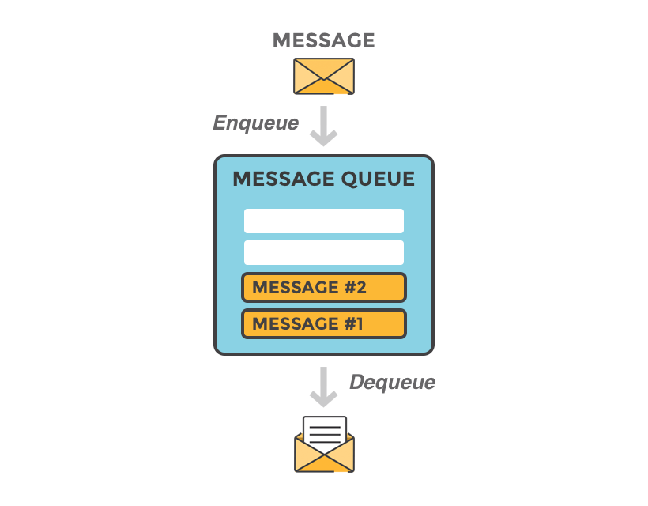
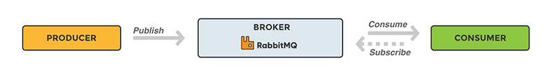

## RabbitMQ by Slava Fomin
## What is the problem?
## Example 1. PDF-generator Client sends text -> Service emails PDF back
## Example 2. SMS sending for business Client sets: 1. array of telephone numbers, 2. text message 3. time intervals to send -> Service sends SMS
## Example 3. Social network You know it :)
## MESSAGE BROKER (QUEUE MANAGER) A software where queues can be defined, applications may connect to the queue and transfer a message onto it.

## Why need message broker - To ensure loosely coupling between producer and consumer - To maintain asynchronous/ non-blocking communication between producer and consumer - In case consumer cannot process messages as fast as producer sending (Messages can be buffered in queue)
## Not only RabbitMQ 1. Apache Kafka 2. RabbitMQ 3. Apache ActiveMQ 4. Kestrel 5. WSO2 Message Broke
## RabbitMQ: example

## how it works
## Exchanges
## TYPES OF EXCHANGES
## Management Interface
## Summary The RabbitMQ makes our life easier and faster: as for developers, as for users
## Thank you for your attention